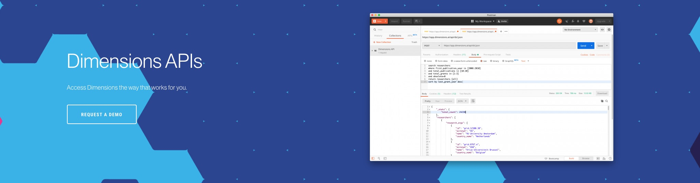

Welcome to the Dimensions API Lab!¶
This site contains a collection of open source Jupyter notebooks showing how to carry out common research data analytics tasks using the Dimensions Analytics API.
More Resources¶
Find out more about the Dimensions API with the following resources: